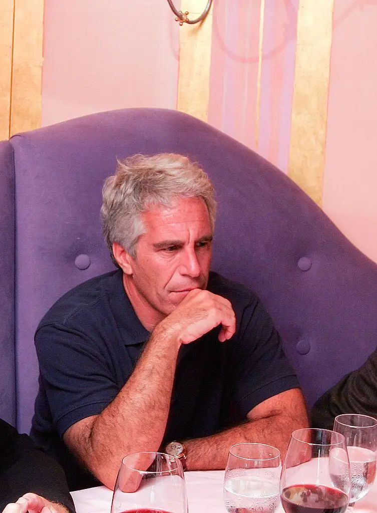

Brazil's Federal Prosecution launches formal investigation
Ministério Público Federal instaura investigação formal
The Brazilian Federal Prosecution (Ministério Público Federal, or MPF) has initiated a formal investigation into possible attempts to recruit women in Brazil connected to convicted sex offender Jeffrey Epstein. The development follows BBC News Brasil's investigation revealing Epstein's previously undocumented connections to the country and Brazilian victims.
O Ministério Público Federal (MPF) instaurou uma investigação formal em possíveis tentativas de aliciamento de mulheres no Brasil relacionadas ao condenado por crimes sexuais Jeffrey Epstein. O desenvolvimento segue a investigação da BBC News Brasil revelando as conexões anteriormente não documentadas de Epstein com o país e vítimas brasileiras.
Prosecutor Cinthia Gabriela Borges, speaking exclusively to BBC News Brasil, stated that the objective is to analyze all situations where Brazilian women may have been recruited and to determine if there were organized recruitment networks operating in the country.
A procuradora Cinthia Gabriela Borges, falando exclusivamente à BBC News Brasil, afirmou que o objetivo é analisar todas as situações em que mulheres brasileiras possam ter sido aliciadas e determinar se havia redes organizadas de aliciamento operando no país.
"The MPF is vigilant regarding situations of women who were in Brazil and who may have been taken to the USA with intent of sexual exploitation, because this could characterize the crime of international human trafficking."
"O MPF está atento a essa situação de mulheres que estavam no Brasil e que foram levadas para os EUA com alguma intenção de exploração sexual, porque isso pode vir a caracterizar o crime de tráfico internacional de pessoas."
Cinthia Gabriela Borges, Federal Prosecution
Getty Images
Getty Images
From denunciation to formal investigation
De denúncia a investigação formal
The investigation was formally launched on Tuesday, February 10, 2026, at the National Unit for Combating International Human Trafficking and Migrant Smuggling—a specialized structure within the MPF that centralizes all investigations and judicial actions in this area across Brazil.
A investigação foi formalmente instaurada na terça-feira, 10 de fevereiro de 2026, na Unidade Nacional de Enfrentamento ao Tráfico Internacional de Pessoas e ao Contrabando de Migrantes—uma estrutura especializada no MPF que centraliza todas as investigações e ações judiciais nessa área em todo o Brasil.
According to BBC News Brasil reporting, the MPF received a formal complaint last week regarding email exchanges between a Brazilian woman and Epstein dating to 2010. The messages detail a proposed trip for a woman from Natal, described as being from a "simple family," to the United States.
De acordo com reportagem da BBC News Brasil, o MPF recebeu uma denúncia formal na semana passada sobre trocas de emails entre uma mulher brasileira e Epstein datadas de 2010. As mensagens detalham uma viagem proposta para uma mulher de Natal, descrita como sendo de uma "família simples", para os Estados Unidos.
In these exchanges, Epstein requested photographs of the Brazilian woman in bikini or lingerie. While the messages are extensive, it remains unclear whether the trip occurred or what its ultimate purpose was.
Nessas trocas, Epstein solicitou fotografias da mulher brasileira em biquíni ou lingerie. Embora as mensagens sejam extensas, permanece incerto se a viagem ocorreu ou qual era seu objetivo final.

Reuters
Reuters
Patterns in the messaging evidence
Padrões na evidência das mensagens
Email evidence obtained by BBC News Brasil reveals multiple Brazilian women who maintained personal contact with Epstein and received financial support. The messages demonstrate patterns of financial dependence in relation to the financier:
Evidência de email obtida pela BBC News Brasil revela múltiplas mulheres brasileiras que mantiveram contato pessoal com Epstein e receberam suporte financeiro. As mensagens demonstram padrões de dependência financeira em relação ao financista:
- Payments for cosmetic procedures and haircuts
- Pagamentos por procedimentos cosméticos e cortes de cabelo
- Funding for travel arrangements
- Financiamento para arranjos de viagem
- Purchase of mobile phones
- Compra de telefones celulares
- In exchange, Epstein received photographs and contact information for other women
- Em troca, Epstein recebeu fotografias e informações de contato de outras mulheres
"Participation of victims is fundamental to this investigation. How girls were recruited, who recruited them, and whether there were organized networks for the purpose of recruiting women for sexual exploitation."
Cinthia Gabriela Borges, Federal Prosecution
"Participação das vítimas é fundamental. Como foram recrutadas, quem as recrutou, e se havia redes organizadas para fins de recrutamento de mulheres para exploração sexual."
Cinthia Gabriela Borges, Ministério Público Federal
The evidence indicates email communications dating back to at least 2006, before Epstein's first arrest. These exchanges show him being invited to parties, discussing visits to São Paulo, arranging money transfers, requesting introductions to other women, and in one case, warning a Brazilian woman that he would be arrested within days—a warning that preceded his 2008 detention.
A evidência indica comunicações por email datando de pelo menos 2006, antes da primeira prisão de Epstein. Essas trocas mostram-o sendo convidado para festas, discutindo visitas a São Paulo, arranjando transferências de dinheiro, solicitando introduções a outras mulheres, e em um caso, avisando uma mulher brasileira que seria preso em dias—um aviso que precedeu sua detenção em 2008.

Getty Images
Getty Images
Investigation timeline
Cronograma da investigação
2006+
2006+
Email communications between Epstein and Brazilian women begin
Comunicações por email entre Epstein e mulheres brasileiras começam
2008
2008
Epstein arrested in United States; FBI interviews Brazilian women in New York
Epstein é preso nos Estados Unidos; FBI entrevista mulheres brasileiras em Nova York
2009-2013
2009-2013
Continued correspondence between Epstein and Brazilian women from Natal
Correspondência continuada entre Epstein e mulheres brasileiras de Natal
2019
2019
Epstein dies in prison; FBI re-interviews Marina Lacerda and other victims
Epstein morre na prisão; FBI entrevista novamente Marina Lacerda e outras vítimas
September 2025
Setembro de 2025
Marina Lacerda and other victims go public with allegations
Marina Lacerda e outras vítimas vêm a público com acusações
February 2026
Fevereiro de 2026
BBC News Brasil reveals Epstein's Brazil connections; MPF opens formal investigation
BBC News Brasil revela conexões Brasil de Epstein; MPF abre investigação formal
Obstacles to investigation and prosecution
Obstáculos à investigação e processamento
Prosecutors acknowledge significant challenges in building cases against Epstein's network. The time elapsed since the crimes—many emails are over 10 years old—complicates evidence gathering and witness testimony. Additionally, much of the activity occurred in U.S. territory.
Promotores reconhecem desafios significativos na construção de casos contra a rede de Epstein. O tempo decorrido desde os crimes—muitos emails têm mais de 10 anos—complica a coleta de evidências e depoimento de testemunhas. Além disso, muita da atividade ocorreu em território dos EUA.
"These are facts of great magnitude and worldwide interest, but they date back to approximately 2011, 2012. [The investigation] involves significant evidentiary complexity not only due to the passage of time but also the extraterritorial nature—much of the activity involving Brazilian women occurred in American territory."
Cinthia Gabriela Borges
"Embora sejam fatos de grande magnitude e muito interesse mundial, esses fatos remontam a mais ou menos 2011, 2012. [A investigação] envolve uma complexidade probatória muito acentuada não só pelo decurso do tempo como também de extraterritorialidade—boa parte dos fatos envolvendo mulheres brasileiras aconteceram em território americano."
Cinthia Gabriela Borges
A critical legal change in Brazil's trafficking law occurred in 2016. Previously, the crime was characterized solely by the fact of a victim being recruited and taken abroad. Under the new standard, prosecutors must prove "defects of consent"—that the victim suffered fraud, coercion, violence, or exploitation of vulnerability.
Uma mudança legal crítica na lei de tráfico do Brasil ocorreu em 2016. Anteriormente, o crime era caracterizado apenas pelo fato de uma vítima ser aliciada e levada para o exterior. Sob o novo padrão, promotores devem provar "vícios de consentimento"—que a vítima sofreu fraude, coação, violência, ou exploração de vulnerabilidade.
The Federal Prosecution emphasizes that women who maintained contact with Epstein are not themselves under investigation. "Victims, as a rule, are not considered responsible for any acts they may have committed in a situation of human trafficking victimization."
O Ministério Público Federal enfatiza que mulheres que mantiveram contato com Epstein não estão sendo investigadas. "Vítimas, em regra, não são consideradas responsáveis por eventuais atos que venham a praticar na situação de vítima de tráfico de pessoas."

Reuters
Reuters
Implications for Brazilian justice system
Implicações para o sistema de justiça brasileiro
The investigation represents a significant development in how Brazil's Federal Prosecution addresses international crimes against Brazilian women. It signals heightened vigilance regarding international trafficking networks and the exploitation of vulnerable immigrant populations.
A investigação representa um desenvolvimento significativo em como o Ministério Público Federal do Brasil aborda crimes internacionais contra mulheres brasileiras. Sinaliza maior vigilância quanto a redes de tráfico internacional e exploração de populações imigrantes vulneráveis.
The Federal Prosecution will continue monitoring the release of additional case files by the U.S. government and searching for further mentions of Brazilian nationals in Epstein's archives. Each case will be analyzed individually to understand the relationships with Epstein and whether specialized recruitment networks existed.
O Ministério Público Federal continuará monitorando a divulgação de arquivos adicionais do caso pelo governo dos EUA e buscando mais menções de brasileiros nos arquivos de Epstein. Cada caso será analisado individualmente para entender os relacionamentos com Epstein e se redes de recrutamento especializadas existiam.
The prosecution's call for victim participation underscores a crucial reality: without the testimony and cooperation of victims themselves, building comprehensive cases remains extremely difficult, particularly given the time elapsed and international dimensions.
O apelo do Ministério Público Federal pela participação das vítimas ressalta uma realidade crucial: sem o depoimento e cooperação das próprias vítimas, construir casos abrangentes permanece extremamente difícil, particularmente dado o tempo decorrido e dimensões internacionais.

Getty Images
Getty Images
A new chapter for Brazilian justice
Um novo capítulo para a justiça brasileira
The Federal Prosecution's investigation marks the first formal Brazilian legal action related to Epstein's alleged crimes. While the challenges are substantial, the commitment to investigate signals Brazil's determination to pursue accountability and protect victims of international trafficking.
A investigação do Ministério Público Federal marca a primeira ação legal formal brasileira relacionada aos alegados crimes de Epstein. Embora os desafios sejam substanciais, o compromisso de investigar sinaliza a determinação do Brasil em buscar responsabilidade e proteger vítimas de tráfico internacional.
For Brazilian women who were victimized, the investigation offers a potential path to justice in their home country—if they are willing to come forward and share their experiences with authorities.
Para as mulheres brasileiras que foram vitimizadas, a investigação oferece um possível caminho para justiça em seu país de origem—se estiverem dispostas a vir a público e compartilhar suas experiências com as autoridades.